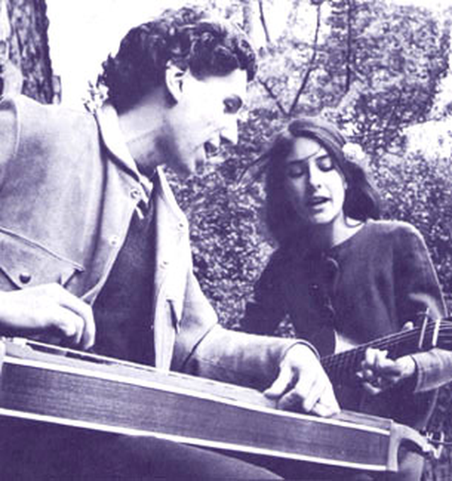
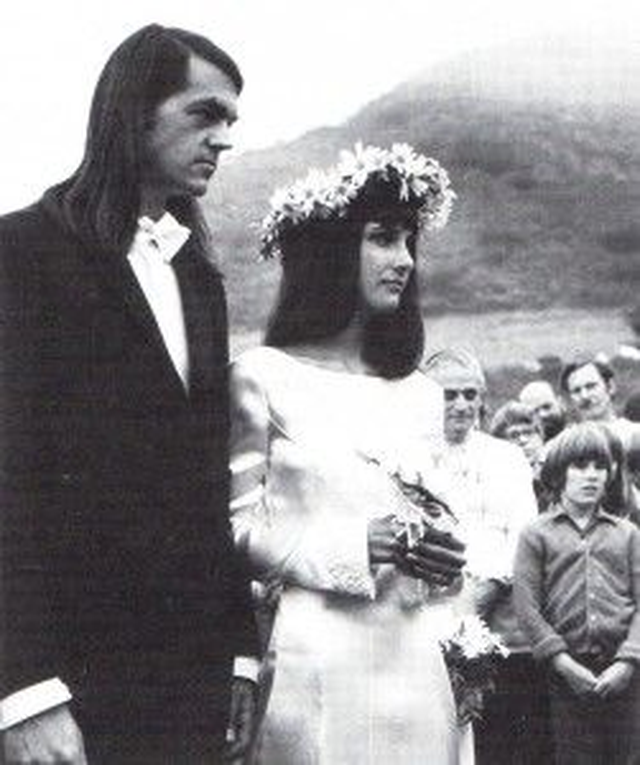

언니의 사랑을 담은 축가 - Sweet Sir Galahad 가사 해설
게시: 2019-06-20T06:30:56+09:00
제가 고등학교 때부터 좋아하던 60~70년대 포크송 가수인 존 바에즈(Joan Baez)는 주로 자신의 오리지널 송보다는 다른 가수의 노래를 재해석해서 부른 것이 많습니다. 요즘은 그런 노래를 커버(cover) 송이라고 한다고 들었고, 요즘은 유튜브 등에서 그런 커버 송을 부르는 유튜브 스타들이 많다고 알고 있습니다. 꼭 그런 것은 아니겠습니다만, 60~70년대에는 자신이 직접 작사작곡한 노래를 부르는 가수나 밴드들이 많았습니다. 존 바에즈는 워낙 타고난 목소리를 바탕으로 인기 가수가 되었지만, 작사작곡 실력은 그렇게까지 정상급은 아니었지요. 전에 소개드린 Diamonds and Rust라는 존 바에즈가 작사작곡한 노래의 가사 속에서도 존 바에즈는 '밥 딜런이 내 작사가 형편없다고 했다'라고 말하고 있지요. 하지만 물론 Diamonds and Rust는 매우 뛰어난 곡이고 가사도 매우 아름답습니다.
겸손한 것인지 아니면 밥 딜런과 필연적으로 비교를 당할 수 밖에 없어서 그런 것인지 모르겠습니다만, 존 바에즈는 공공연하게 자신의 songwriting에 대해 "그저 그렇다(mediocre)"라고 말한 바 있습니다. 전에 1969년 여름 우드스탁(Woodstock) 페스티벌에서의 존 바에즈가 부른 Joe Hill이라는 노래를 들은 적이 있는데, 제가 들은 그 녹음에서는 노래가 끝난 다음에도 바에즈가 다음 곡을 설명하는 말이 잠깐 동안 계속 이어졌습니다. 대충 이런 내용이었어요. "저도 제 작사작곡 실력이 그저 그런 편이라는 거 알아요. 그래서 목욕통 속에서가 아니면 제가 지은 노래는 부르지 않는데, 예외가 이 Sweet Sir Galahad라는 노래에요. 이 곡은 머리가 아주 긴 제 제부에 대한 노래인데, 제 여동생 미미의 첫 남편이 죽은 후 몇 년 뒤에 미미와 결혼한 이 제부는 밤마다 미미의 침실 창문으로 들어오곤 했거든요. 들어올 때는 발부터 들어왔지요." 저는 이게 무슨 황당한 이야기인가, 그리고 가족의 저런 사적이고 어떻게 보면 민망한 이야기를 저렇게 많은 사람들 앞에서 막 저렇게 이야기해도 되나 싶었습니다. 정작 그 녹음은 거기서 끝나버렸기 때문에 그때는 그 Sweet Sir Galahad라는 제목의 노래를 들어보지도 못했습니다. 나중에야 유튜브에서 그 노래를 들었고, 또 그것이 존 바에즈가 작사작곡한 최초의 곡이라는 것도 알게 되었지요.

(미미와 그녀의 첫번째 남편 리처드입니다.)
(언니도 미인이지만 보시다시피 미미도 굉장한 미인이네요. 미미는 불행히도 51세의 나이로 암으로 인해 사망했고, 그 장례식에는 언니를 비롯해 1600여명이 참석했다고 합니다.) 이 노래는 정말 바에즈의 여동생 미미의 결혼에 대한 이야기입니다. 미미는 바에즈보다 4살 어린 동생으로, 언니처럼 음악적인 재능이 뛰어난 가수이자 사회 운동가였습니다. 언제나 사회성 넘치는 음악을 했던 바에즈와 함께 집회를 벌이다 언니와 함께 투옥되기도 했지요. 다들 아시다시피 존 바에즈는 한동안 밥 딜런과 연인 관계였는데, 사실 밥 딜런은 처음에는 언니인 존보다는 동생 미미에게 더 끌렸었다고 합니다. 그런데 미미는 17살 때 파리에서 당시 유부남이자 8살 연상이었던 리처드 파리냐(Richard Fariña)를 만나, 결국 다음해 리처드와 결혼을 합니다. 18살이라는 어린 나이였지요. 리처드는 혹자에 의하면 밥 딜런을 뺨치는 재능이 넘치는 음악가이자 작가였는데, 이 둘은 꽤 잘 어울리는 한쌍이었고 둘이서 음반을 내기도 하는 등 행복하게 살았습니다. 그러나 리처드는 미미의 21세 생일날 오토바이 사고로 그만 목숨을 잃습니다. 생일날 사랑하는 남편을 잃은 미미의 심정이야 말할 것도 없고, 사랑하는 동생의 그런 비극을 옆에서 봐야 했던 바에즈의 마음도 찢어졌겠지요. 그러다 약 3년 뒤, 미미는 음악 제작자였던 밀란 멜빈(Milan Melvin)과 결혼합니다. 노래 가사처럼 정말 밀란이 야밤에 미미의 침실에 몰래 창문으로 기어 들어갔다고 합니다. 이들은 열애 끝에 많은 사람들의 축복을 받으며 Big Sur 포크송 축제에서 공개 결혼식을 올렸는데, 이때 화관을 쓴 미미의 행복한 모습을 본 바에즈가 여동생의 행복을 기원하며 쓴 곡이 바로 이 Sweet Sir Galahad입니다.


(미미와 밀란의 결혼식 사진입니다.) 이 곡은 전에 소개드린 'Diamonds and Rust' ( https://nasica1.tistory.com/91 )와 함께 대표적인 바에즈의 자작곡으로 유명합니다. 바에즈의 노래들은 모두 약간 서글픈 느낌이 듭니다만, 이 노래는 그녀의 노래들 중에서 따뜻한 느낌이 드는 몇 안 되는 노래 중 하나입니다. 특히 저는 'here's to the dawn of their days'라는 후렴구의 가사와 멜로디가 정말 마음에 들더라고요. 그런데 왜 뜬금없이 원탁의 기사 갤러해드가 나오냐고요 ? 글쎄요, 밀란은 키가 크고 긴 머리를 기른 남자였는데, 외모는 마치 링컨 대통령을 연상시켰다고 합니다. 그런 외모가 원탁의 기사들 중 가장 품행이 방정하고 정의감이 넘쳤던 갤러해드를 연상시켰을까요 ? 아마 제 생각에는 바에즈가 동생 미미의 남편이 갤러해드처럼 따뜻하고 올바른 품성으로 미미를 행복하게 해주기를 기원했던 것이 아닐까 합니다. 그러나 사람 일이라는 것이 바라는 대로만 흘러가지는 않는 법이지요. 이유는 잘 알려지지 않았지만 미미의 결혼 생활은 3년 만에 이혼으로 끝났고, 이후 미미는 계속 싱글로 살았습니다. 첫 남편인 리처드의 성 파리냐를 다시 쓰면서요. 그리고 바에즈는 이후 공연에서 이 곡을 부를 때마다 'the dawn of their days'를 'the dawn of her days'로 살짝 바꿔불렀다고 합니다. 이 곡이 처음 공개 콘서트에서 불려진 것은 1969년 우드스탁 공연이었는데, 제가 위에서 언급한 그 설명을 바에즈가 직접 소개하고 노래를 부르는 장면이 아래 유튜브 비디오에 나옵니다. 정말 인터넷 세상이 좋긴 좋네요 ! 그리고 저 목소리와 연주가 라이브 공연이라니 정말 믿어지지가 않을 정도로 멋집니다. 레코딩과 라이브가 전혀 차이가 없네요 ! https://www.youtube.com/watch?v=R9cpBML9SoE Sweet Sir Galahad (다정한 기사 갤러해드) Sweet Sir Galahad Came in through the window In the night when The moon was in the yard. 다정한 기사 갤러해드는 창문으로 들어왔어요 때는 밤이었지요 마당에는 달빛이 가득했어요 He took her hand in his And shook the long hair From his neck and he told her She'd been working much too hard. 그는 그녀의 손을 맞잡고 자신의 긴 머리를 휙 젖혔어요 그리고 말했지요 그녀가 너무 열심히 일하는 것 같다고요 It was true that ever since the day Her crazy man had passed away To the land of poet's pride, 그게 사실이긴 했어요 그녀의 그 멋진 남자가 시인의 긍지라는 나라로 날아간 이후 She laughed and talked a lot With new people on the block But always at evening time she cried. 그녀도 웃고 떠들긴 했지요 동네의 새로운 사람들과요 하지만 밤이면 그녀는 항상 울었답니다 And here's to the dawn of their days. 이제 먼동이 트는 그들의 인생에 축배를 ! She moved her head A little down on the bed Until it rested softly on his knee. 그녀는 침대 위에서 머리를 좀더 내려 그의 무릎을 베고 누웠어요 And there she dropped her smile And there she sighed awhile, And told him all the sadness Of those years that numbered three. 거기서 그녀는 웃음을 떨구고 잠깐 한숨을 내쉬고는 그에게 모든 슬픔을 털어놓았지요 3년이라는 세월의 슬픔이었지요 Well you know I think my fate's belated Because of all the hours I waited For the day when I'd no longer cry. 내 운명은 늦었다고 생각해요 정말 오래 기다렸었거든요 이제 울지 않아도 될 날을요 I get myself to work by eight But oh, was I born too late, And do you think I'll fail At every single thing I try? 난 8시까지 일을 하지만 아, 내가 너무 늦게 태어난 걸까요 ? 당신 생각엔 내가 제대로 못해낼 것 같나요 제가 시도하는 모든 일에서요 ? And here's to the dawn of their days. 이제 먼동이 트는 그들의 인생에 축배를 ! He just put his arm around her And that's the way I found her Eight months later to the day. 기사는 그저 그녀를 꼭 끌어안았고 제가 그녀를 본 건 그 모습 그대로였어요 8개월이 지난 결혼식 날에서요 The lines of a smile erased The tear tracks upon her face, A smile could linger, even stay. 웃음 덕분에 사라졌어요 그녀 얼굴의 눈물자국이요 미소가 잠깐 보이더니 계속 웃더라고요 Sweet Sir Galahad went down With his gay bride of flowers, The prince of the hours Of her lifetime. 다정한 기사 갤러해드는 꽃길을 행진했어요 즐거운 꽃의 신부와 함께요 그녀와 평생 함께 할 그날의 왕자님이었지요 And here's to the dawn Of their days, Of their days. 이제 먼동이 트는 그들의 인생에 축배를 ! 작사 : Joan Baez
Source : http://www.richardandmimi.com/mimi-bio.html https://en.wikipedia.org/wiki/Mimi_Fari%C3%B1a https://en.wikipedia.org/wiki/Sweet_Sir_Galahad https://en.wikipedia.org/wiki/Joan_Baez